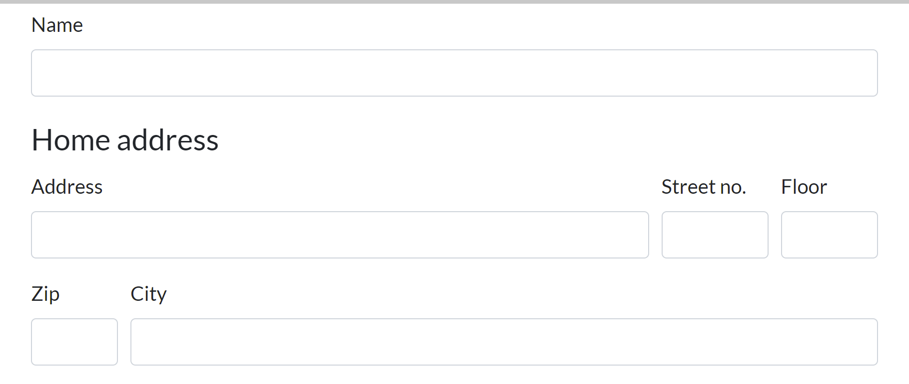

<section>
  <div class="block" data-type="text" data-name="title" style="left:72.1745px;top:51px;width:948.303px;height:auto;z-index:10;text-align:left">
    <h2>So how about a custom control?<span style="color:rgb(204, 204, 204); text-align:center">🤓</span>
</h2>
  </div>
  <div class="block" data-type="image" data-name="image-1" data-keep-ratio style="left:102.4px;top:132.133px;width:1075.2px;height:455.733px;z-index:11">
    
  </div>
  <div class="block" data-type="shape" data-name="shape-1" data-shape="rect" data-fill="rgba(0, 0, 0, 0)" data-stroke="#ffff00" data-stroke-width="10" data-radius="0" data-animate="fade-in" data-animate-duration="0.6" data-animate-delay="0" data-animate-on="shape-2" style="left:90px;top:325px;width:1097px;height:272px;z-index:12"></div>
  <div class="block" data-type="shape" data-name="shape-2" data-shape="rect" data-fill="rgba(0, 0, 0, 0)" data-stroke="#ff9900" data-stroke-width="10" data-radius="0" data-animate="fade-in" data-animate-duration="0.6" data-animate-delay="0" data-animate-on="image-1" style="left:127px;top:370px;width:753px;height:85px;z-index:13"></div>
  <aside class="notes">Talk about different sizes of controls. Small highly reusable (Address with dawa integration). Or larger custom control, where also UI is always the same. One place to fix mistakes and design

So we should create a control that can receive and propagate an address. An address is a obvious reusable control

Examples of custom control in my project
Simple types of control
search-person
search-company
formatted-number
phone-control
range-control
date-range-control


</aside>
</section>
